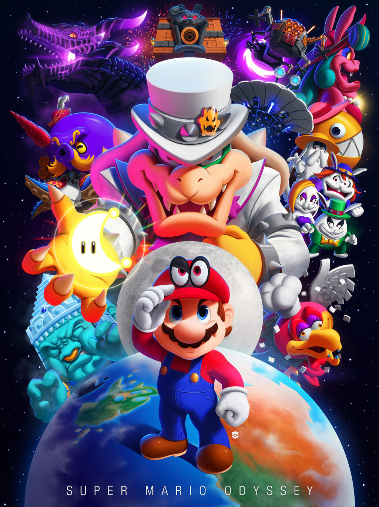
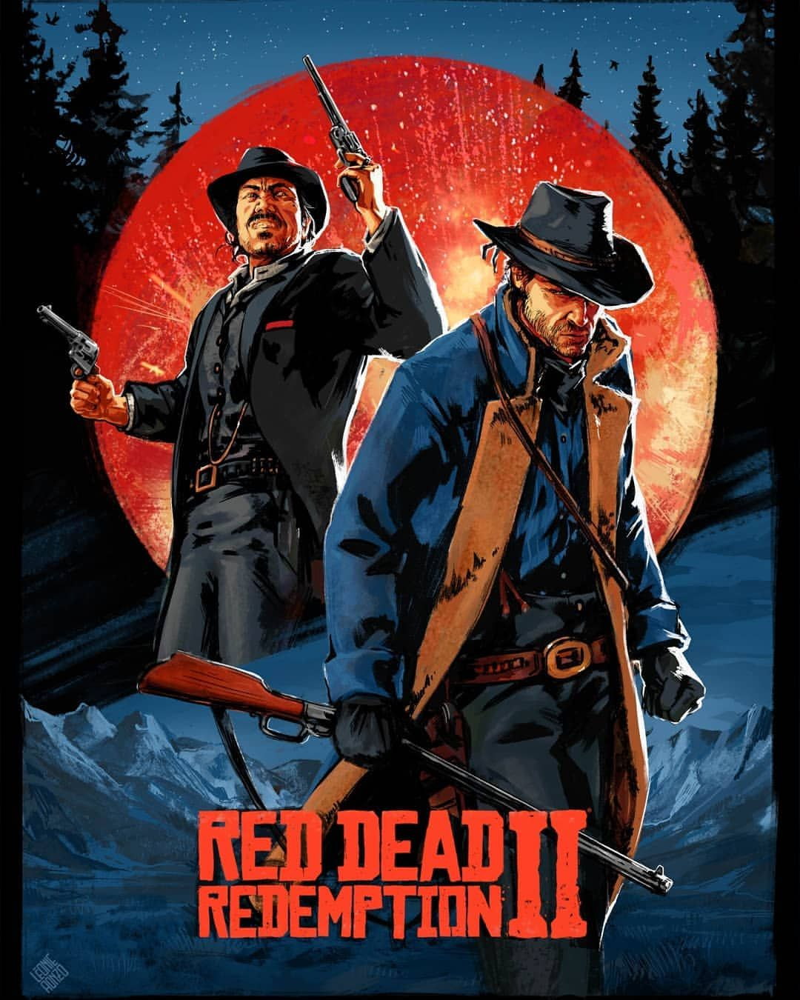

Lanzamiento de 'Kingdom Come: Deliverance II' y debate sobre el valor literario de los videojuegos: El reciente lanzamiento de 'Kingdom Come: Deliverance II' ha avivado la discusión sobre si los videojuegos pueden considerarse nuevas formas de novela. Desarrolladores y escritores destacan que, al combinar narrativa interactiva con elementos visuales y sonoros, los videojuegos ofrecen experiencias inmersivas que pueden rivalizar con la literatura tradicional.
Últimas Noticias
Microsoft prueba un chatbot de IA para mejorar la experiencia en Xbox: Microsoft está implementando un chatbot de inteligencia artificial en su plataforma Xbox. Este asistente virtual tiene como objetivo mejorar la experiencia del usuario, brindando recomendaciones personalizadas y asistencia en tiempo real, integrando aún más la IA en el ecosistema de juegos de la compañía.
Juegos Populares

|
The Legend of Zelda: Breath of the WildUn juego de mundo abierto con una historia envolvente |
 |
Super Mario OdysseyUn colorido juego de plataformas en 3D donde Mario viaja por diversos mundos |
|  |
Red Dead Redemption 2Un western épico con una historia profunda |

|
The Witcher 3: Wild HuntUn juego de rol y acción donde controlas a Geralt de Rivia, un cazador de monstruos, |

|
God of WarUn juego de acción y aventura basado en la |

|
OverwatchUn shooter en equipo en el que jugadores eligen héroes con habilidades únicas y |